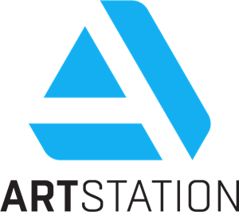
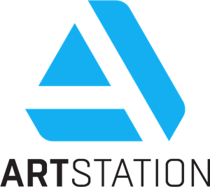

Soy Svetlana Cano Sens, estoy en 8° semestre de la carrera en Ingeniería en Producción Multimedia, en la Universidad La Salle Victoria. Muchos de mis conocimientos y habilidades los he aprendido por mi cuenta.
Me identifico como una persona responsable, creativa y me puedo adaptar fácilmente a trabajar en equipo.
Me especializo en la creación de ilustraciones digitales, mayormente son FanArts o pequeñas creaciones mías, además he participado en el arte conceptual de pequeños juegos que realice a lo largo de la carrera; también he tenido participación en la creación de storyboard para cortos que se han realizado a lo largo de la carrera y actualmente estoy aprendiendo por mi cuenta la animación en 2D y pixelart.
Estoy en busca de trabajos en donde pueda participar en la creación y diseño de personajes, arte conceptual de ítems y aprender nuevas habilidades.
Software en que trabajo:


Si te interesa mi trabajo contáctame a través de mi correo: cano.sve.1002@gmail.com,
o a través de mis redes sociales:
 .
.